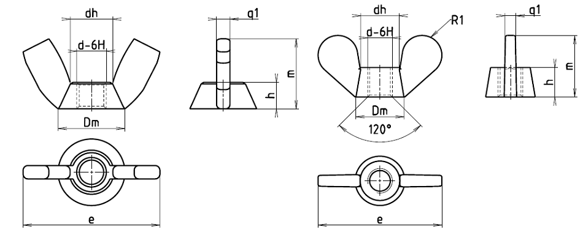

Příklad označení Křídlaté matice se závitem M10:
KŘÍDLATÁ MATICE M10 ČSN 02 1461.21
| Závit d | M3 | M4 | M5 | M6 | M8 | M10 | M12 | M16 | M20 | M24 |
|---|---|---|---|---|---|---|---|---|---|---|
| dh | 4,4 | 5,8 | 6,7 | 8,7 | 10,6 | 12,7 | 19 | 22 | 28 | 36 |
| Dm | 6,2 | 8,3 | 10,4 | 12,4 | 16,6 | 20,7 | 23 | 28 | 36 | 45 |
| e | 15 | 20 | 25 | 31 | 40 | 51 | 64 | 72 | 90 | 112 |
| g1 | 2,2 | 3 | 3,5 | 4 | 5 | 6 | 5 | 6 | 7 | 9 |
| g2 | 2,7 | 4 | 4,7 | 5,5 | 8 | 9,5 | 6 | 7 | 9 | 11 |
| m | 7,7 | 10,5 | 13,5 | 16 | 20 | 25,5 | 32 | 36 | 45 | 56 |
| h | 2,4 | 3,2 | 4 | 4,8 | 6,4 | 8 | 14 | 16 | 20 | 24 |
| R1 | 4 | 6 | 7 | 8 | 11 | 15 | 10 | 11 | 14 | 18 |
| R2 | – | – | – | – | – | – | 1 | 1,2 | 1,6 | 2,5 |
| R3 | – | – | – | – | – | – | 6 | 7 | 9 | 10 |
| R4 | – | – | – | – | – | – | 1,2 | 1,6 | 2 | 3 |
| R5 | 4,8 | 6,5 | 8,1 | 9,7 | 10,1 | 12,1 | – | – | – | – |
| Hmotnost [g] | 0,9 | 2,1 | 4,1 | 7,3 | 17,4 | 33,4 | 60 | 90 | 180 | 260 |